| |
Lofting |
| <<< Sweeping Tool Bodies Along a Path | Chapters | Shadow Curves >>> |
Lofting creates a sheet or solid body by fitting surfaces through a series of profiles, and is performed by PK_BODY_make_lofted_body. Lofts may be periodic (the start and end profiles are the same, resulting in a periodic lofted surface), or non-periodic (the start and end profiles are different). Lofts can also be created in a piecewise manner (the profiles are repeated). See Section 41.2, “Supplying profiles” for more information.
|
Note: This functionality does not support facet bodies. |
You can additionally constrain the geometry of a loft across profiles by specifying any of the following:
A series of options control the derivative conditions, and how adjacent profiles containing different numbers of edges are matched.
For an example of this functionality, see the code example in the
C++\Code Examples\Modelling\Profiling\Loft
folder, located in
example_applications
in your Parasolid installation folder.
Profiles are supplied to PK_BODY_make_lofted_body as an array of wire, sheet or minimal bodies. Sheets and minimum bodies can only be used as start or end profiles. All intermediate profiles must be wire bodies.
The minimum number of profiles required for periodic and non-periodic lofts, with and without guide wires, is shown below:
See Section 41.8, “Lofting with guide wires”, for more information about guide wires.
If either of the start or end profiles are wires then the resulting body is a sheet, otherwise the result is a solid.
None of the profiles’ geometry or topology appears in the resulting solid, and it is up to you to delete profiles when they are no longer required.
Generally, profiles should be either all open or all closed. However, provided all intermediate profiles are closed, one or both of the end profiles may be open, as shown in Figure 41-1. In such cases, any open end profile is treated as a degenerate closed profile that doubles back on itself. Minimum body profiles are considered either open or closed, depending on the closure of the other supplied profiles.
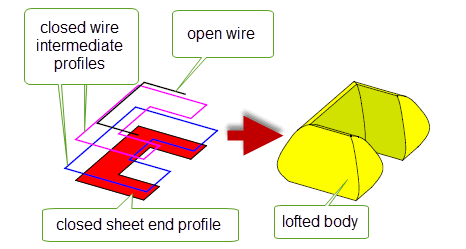Figure 41-1 Combining open and closed profiles
You must supply a start vertex for each profile. These start vertices should be aligned to avoid twist in the result, as shown in Figure 41-2.
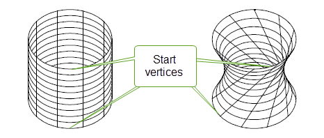For best results, any edge in a profile should be at least ten times the specified tolerance for the loft operation. The loft may fail if any edge is smaller than this, depending on the relative length of the edges it is adjacent to, and the edges it is matched with on other profiles. If a profile contains an edge that is smaller than this recommendation, you can replace it with a tolerant vertex and specify a degenerate match in the adjacent profiles (in the case of a start or end loft), as shown in Figure 41-3.
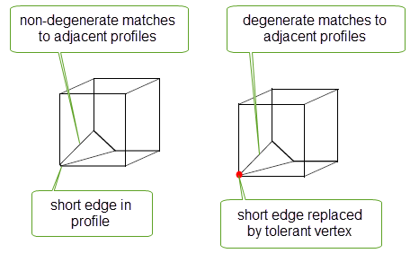Figure 41-3 Replacing short edges in profiles with tolerant vertices.
See Section 41.7, “Matching”, for more information about matching.
Repeated profiles can be supplied to PK_BODY_make_lofted_body to produce a piecewise lofted body. In piecewise lofting the operation is completed in separate sections, as shown in Figure 41-4, to create a resultant lofted body that is non-G1 smooth across the repeated profiles.
|
Note: Repeated profiles must be in sequential order in the profile array and clamps cannot be applied to the repeated profiles. |
Figure 41-4 Piecewise lofting with repeated profiles
A number of restrictions apply to the supplied profiles, depending on whether wire or sheet profiles are specified. These are shown below:
The resulting sheet is constructed so that the outward normal is aligned with the cross product of a tangent in the direction of the profile orientation, and the loft direction (taken in that order). All the profiles should have the same orientation in order to avoid twist in the result. |
|
|
You also need to make sure that the resulting body will not be self-intersecting. For example, this can happen when two profiles are co-planar and one undergoes a large change of direction, as illustrated below:
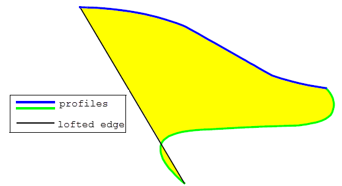Figure 41-5 Self-intersecting sheet body created from two co-planar profiles
In addition, there are several restrictions that apply if any of the supplied profiles touch:
deriv_mag
must be set to PK_BODY_loft_deriv_mag_smooth_c. See Section 41.5.3, “Calculating derivative magnitudes” for more information on derivative magnitudes.Figure 41-6 Lofting between touching profiles
You specify derivative conditions for a loft operation using a PK_BODY_loft_deriv_conds_t structure. Derivative conditions can be applied to any of the following:
These fields are also used to specify derivative conditions for any intermediate profile in a loft.
|
If PK_BODY_loft_unconstrained_c, no constraints are applied to the curvature across the profile or guide wire. This is the default, and you are strongly advised to use this setting. If PK_BODY_loft_natural_c, natural (zero) curvature is applied across the profile. You can only use this option at the start or end of a non-periodic loft, providing there are no vector, face, or planar clamps at that end, and no guide wires have been specified. In addition, no other derivative conditions may be specified for that profile.
If PK_BODY_loft_clamped_c, constrain the curvature according to the specified clamp conditions, when, and only when, a face clamp is specified via the Figure 41-7 shows the effect of this value, using a profile that has been clamped at both ends to a spherical face. Using PK_BODY_loft_clamped_c produces a lofted surface that is G2-continuous at that profile, whereas the surface produced using PK_BODY_loft_unconstrained_c is G1-continuous. |
|
|
The type of clamp to be supplied. Clamps of an individual type are vector, face, planar and none. A combination of these clamp types may also be applied. See Section 41.3.1, “Composite clamps for derivative conditions” for more information. |
|
|
With a vector clamp, a tangent vector is applied to vertices of the profile or guide wire to constrain the tangents across that profile or guide wire. You can supply separate pairs of tangent vectors and vertices for each vertex you want to constrain, or you can supply a single tangent vector to be applied across the whole profile or guide wire.
The
|
|
|
With a face clamp, the tangents across the profile or guide wire are constrained to match faces that meet the profile or guide wire. You should supply pairs of clamp faces and profile or guide edges for the edges you want to constrain. You can specify the magnitude for the cross boundary derivative, paired with any vertex from an edge with a face clamp, as shown in Figure 41-11. |
|
|
With a planar clamp, the start or end of the loft is clamped parallel to a specified plane. The magnitude of the cross boundary derivative can also be specified. See Figure 41-12 for an example of planar clamping. |
Figure 41-7 Constraining the curvature of the loft when applying face clamps
|
Note: If you are using guide wires, then the use of certain derivative conditions is restricted. See Section 41.8, “Lofting with guide wires” for full details. |
If the type of clamp supplied in PK_BODY_loft_deriv_conds_t is one of vector, face or planar then only the corresponding clamp option fields will be examined for the description of the clamp. However, if a combination of types of clamp is required then composite clamps can be requested. In these cases Parasolid will examine multiple clamp option fields supplied through the PK_BODY_loft_deriv_conds_t structure.
Parasolid supports the following two
type
values for using composite clamps:
|
Both the |
|
|
Both the |
If composite clamps are used then the following restrictions apply to the
vector_clamp
option field in the PK_BODY_loft_vector_clamp_t structure:
magnitudes
must be supplied and set to 1 for all
vertices
. See Section 41.5.3, “Calculating derivative magnitudes” for more information.
tangents
must be perpendicular to the face or planar clamp normals at all the
vertices
. Composite clamps can be applied to any of the following:
Figure 41-8 Subtle changes to a lofted result that can be applied through specifying composite clamps.
Parasolid provides several different methods of controlling the derivative conditions to be applied to the start and end profiles of a loft. These are specified using structures and fields in the
end_conditions
structure of PK_BODY_make_lofted_body_o_t. The
end_conditions
structure contains the following options:
|
If PK_PARAM_periodic_yes_c, the loft returns periodically to the start profile. If the start profile is a sheet then the result is a solid body. Otherwise the result is a sheet. |
|
|
A structure that specifies a derivative condition for the start profile in the loft. See Section 41.5.3, “Calculating derivative magnitudes” for a description of the fields available in this structure. |
|
|
A structure that specifies a derivative condition for the end profile in the loft. See Section 41.5.3, “Calculating derivative magnitudes” for a description of the fields available in this structure. If the loft is periodic, these constraints are ignored. |
Figure 41-9 Derivative conditions for the start and end profiles in a loft
In addition to the start and end profiles in a loft (as described in Section 41.4, “Specifying derivative conditions for the first or last profile”), you can specify derivative conditions to control the shape of the loft at any other profile. This is done using the following options to specify derivative conditions for any combination of other profiles in a loft:
|
The number of profiles that you want to specify derivative conditions for. This is the number of elements in both the |
|
|
An array of derivative conditions for the profiles indexed in |
|
|
An array of integers. Each integer refers to a profile in the loft. See Section 41.5.2, “Specifying intermediate profiles” |
The
intermediate_derivs
option contains an array of derivative conditions for the profiles you want to constrain. Each element in the array describes a curvature and clamp type to apply to the loft at a given profile. This is specified using a structure in the same way as derivative conditions for the start and end profiles in a loft. See Section 41.5.3, “Calculating derivative magnitudes” for more information.
Derivative conditions specified in
intermediate_derivs
are mapped onto profiles in the loft using the
intermediate_profiles
array. This is an array of integers that specifies which profile each derivative condition should be applied to.
The start and end profiles must not be referred to in the
intermediate_profiles
array. It must therefore contain integers between
where
n_profiles
is the number of profiles, as specified in the call to PK_BODY_make_lofted_body.
Figure 41-10 illustrates how derivative conditions can be specified for some of the intermediate profiles in a loft containing 6 profiles.
Figure 41-10 Specifying derivative conditions for intermediate profiles in a loft
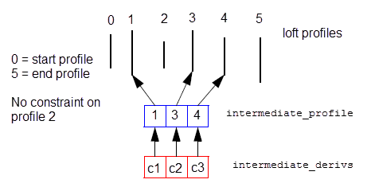When you specify face clamps or planar clamps, you also specify a magnitude that affects the extent of the clamp, as shown in Figure 41-11.
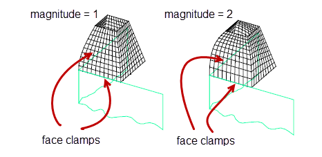Figure 41-11 Using different cross boundary derivative magnitudes on partial face clamps
You can use the
deriv_mag
option in PK_BODY_make_lofted_body_o_t to control the algorithm that Parasolid uses to apply this magnitude to a clamp. This option takes the following values:
|
Note: It is recommended that you always set this option to PK_BODY_loft_deriv_mag_round_c. Other values in this option should only be used when updating old models. |
Lofting to a degenerate profile is considered as having a loft profile which occupies a single point in space. A degenerate point profile is specified as a minimal body.
Three types of end conditions are applicable at a degenerate loft profile:
In the latter case, the order in which the vectors are supplied is significant: the first tangent vector in the clamp is associated with the start vertex of the adjacent profile, and the remaining tangent vectors are applied in order along the adjacent profile. Mismatching these can cause the loft to twist.
Figure 41-12 Lofting degenerate profiles
Where all the profiles in the loft have the same number of edges, and hence the same number of vertices, the vertices are mapped one-to-one across the profiles. All start vertices are matched with each other, then subsequent vertices on each profile are matched in order (i.e. nth vertices are matched).
Where the profiles have different numbers of edges, the application needs to provide information on how to match the profiles. This is done in one of two ways:
If a mapping between vertices is provided, constraints must be followed:
Figure 41-13 Example of legal vertex mapping
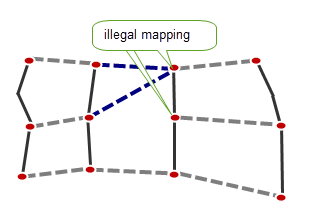Figure 41-14 Example of illegal vertex mapping
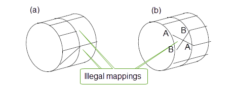Figure 41-15 Example of illegal vertex mapping
By specifying guide wires for a loft operation, you can constrain the loft geometry across profiles, resulting in a lofted body that follows the shape described by the guide wires at relevant points. Figure 41-16 shows the effect of specifying a guide wire during a lofting operation. In the example, both end profiles are wires, thereby producing a sheet as the result. The guide wire specified is a half circle that intersects both profiles at a point one third from the left of each profile. The resulting body follows the guide wire along the line of the guide wire itself, and follows the shape of the loft operation at the ends of the profiles. In between, it transitions smoothly to result in the body shown in the right hand part of the figure.
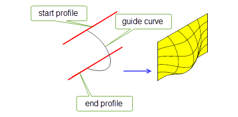Figure 41-16 Use of a simple guide wire during a lofting operation
Guide wires must be visibly smooth (adjacent edges in the guide wire must meet at an angle that is less than a relaxed angle precision determined internally by Parasolid, but may be greater than session angle precision) and are interpolated by the loft as iso-parameter curves along the loft direction. Each guide wire has a region of influence that covers the whole length of the loft and whose bound is the boundary of the corresponding smooth section of profiles or (in cases where more than one guide wire is specified) adjacent guide wires, whichever is reached first.
Each guide wire is assumed to intersect every profile once only at corresponding vertices, subject to the largest vertex tolerance there. Guide wires must be oriented.
Guide wires can extend beyond their intersections with either the start or end profiles (or both), so long as that profile:
In such cases, the resultant lofted bodies extend beyond the start or end profile, as shown in Figure 41-17. As a special case of this, you can also create a lofted body by supplying a single profile and at least one guide wire.
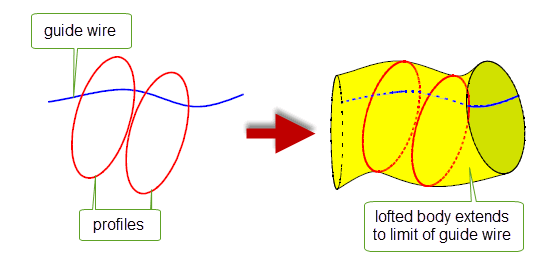Figure 41-17 Extending guide wire beyond the start or end profiles
Similarly, you can also use guide wires to reduce the number of profiles required when creating periodic lofts: if you supply a closed guide wire, then only a single profile is required in order to produce a periodic loft. When Parasolid produces a loft from one or two profiles and a closed guide wire, it also creates additional construction profiles. You can control whether the topology from these construction profiles is propagated to the resultant lofted body: see Section 41.11, “Creating construction topology”, for more information.
Figure 41-18 shows an example in which a single closed profile and three closed guide curves have been used to create a lofted body, creating a number of construction profiles in the process.
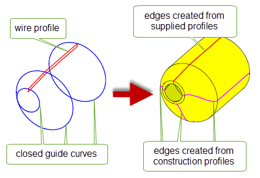Figure 41-18 Creating a lofted body using a single profile and a closed guide wire
If any of the above conditions are not true, then the guide wire must be bound by its intersection with the start and end profiles, as shown in Figure 41-16.
If any one of a set of matched profile vertices lies on a guide wire, then they must all lie on the same guide wire. This is illustrated in Figure 41-19. On the left hand side of the figure three profiles are shown, A, B, and C, in which the highlighted vertices form a set of matching profile vertices. The guide curve shown correctly passes through each of these vertices. The right hand side of Figure 41-19 shows the same three profiles, but for two profiles (B and C) the guide curve passes through vertices that are not in the set of matching vertices. The loft operation described in the right hand side of the figure could not be performed.
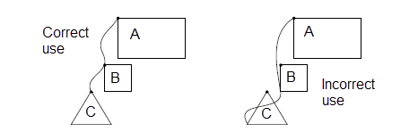Figure 41-19 Correct and incorrect use of guide wires with matching profile vertices
Guide wires restrict the use of certain clamped derivative conditions. Because guide wires are interpolated by the loft operation, the loft derivatives along the guide wires are completely determined. Any clamped end condition must therefore satisfy both the tangency and the derivative magnitude imposed by the guide wires. This means that the following clamp operations are not allowed at any profile vertex that has a match on a guide wire:
|
Note: You can, however, specify derivative conditions on guide wires themselves. See Section 41.9, “Specifying derivative conditions for guide wires” for details. |
Edges of the lofted body that are coincident with the guide wire(s) have nominal curves on them that are derived from the guide wire geometries. These nominal curves are copies of the (nominal) curves of the edges of the corresponding guide wire.
You specify guide wires using the
n_guide_wires
and
guide_wires
options in PK_BODY_make_lofted_body_o_t:
|
An integer specifying the number of guide curves being used. |
|
In addition to loft profiles (as described in Section 41.4, “Specifying derivative conditions for the first or last profile” and Section 41.5, “Specifying derivative conditions for intermediate profiles”), you can specify derivative conditions to control the shape of the lofted body along any guide wire specified, as shown in Figure 41-20.
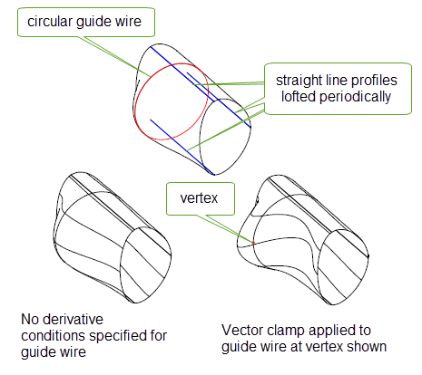Figure 41-20 Applying derivative conditions to guide wires
Derivative conditions are applied to guide wires using the following options to PK_BODY_make_lofted_body:
|
The number of guide wires that you want to specify derivative conditions for. This is the number of elements in both the |
|
|
An array of derivative conditions for the guide wires indexed in |
|
|
An array of integers. Each integer refers to a guide wire in the loft, where 0 refers to the first guide wire specified in the |
These options are analogous to the options used to specify derivative conditions for intermediate profiles, as described in Section 41.5, “Specifying derivative conditions for intermediate profiles”.
|
Note: When supplying derivative conditions for guide wires, the following clamp operations are not allowed at any guide vertex that has a match on a profile: |
The
topology_form
option controls how faces should divide up the resulting body. It takes the following values:
|
Note: You can also control the topological form of lofted bodies by specifying how smooth edges in profiles should be determined. See Section 41.12, “Controlling profile smoothness”. Using guide wires (see Section 41.8, “Lofting with guide wires”) does not change the number of faces in the resulting body, no matter which topology form option is used. |
Figure 41-21 Lofting topology form
When creating a periodic loft using a closed guide wire and fewer than three profiles (as described in Section 41.8, “Lofting with guide wires”), Parasolid creates additional construction profiles in order to complete the lofting operation. You can think of these construction profiles as profiles that you might ordinarily have specified yourself, but which Parasolid has been able to generate for you.
If you set the
create_construction_topol
option to PK_LOGICAL_true, then the topology from any construction profiles is reflected in the topology of the resultant lofted body. It is strongly recommended that you use this option if you want to avoid any significant change in behaviour during downstream operations. For example, if the user of your application subsequently edited or reapplied the loft, your application should treat the construction profile that was created by Parasolid as a real profile, as if it had been specified in the original loft. Failure to do this could result in significant unexpected changes to the model. Setting
create_construction_topol
to PK_LOGICAL_true allows you to do this.
Figure 41-22 shows an example in which a lofted body has been created from two wire profiles and a closed guide curve. During the loft operation, Parasolid has created two construction profiles, and the edges from all four profiles have been included in the resulting lofted body. In your application, failing to include the construction profiles in any subsequent lofting operation could result in unexpected changes to the model.
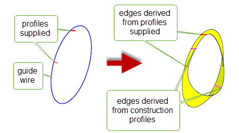Figure 41-22 Adding construction topology to the lofted body
As described in Section 41.10, “Specifying the topological form of lofted bodies”, you can use
topology_form
to control whether the loft operation creates edges in the direction of the loft at vertices where two profile edges join smoothly. PK_BODY_make_lofted_body also provides the
profile_smoothness
option to control when lofting considers adjacent profile edges to join with G1 smoothness. It can take the following values:
When profile edges are considered to join smoothly, a single surface is created for the area of the loft that is generated from them. If, in addition,
topology_form
is left at its default value, a single face is created for that surface as well.
Figure 41-23 shows a loft created from two wire profiles, each of which contains two edges that join visibly smoothly, but not to within session angle precision.
profile_smoothness
is PK_BODY_smoothness_exact_c, an edge is created between the vertices in each profile. Separate surfaces and faces are created for the lofted body.
profile_smoothness
is PK_BODY_smoothness_relax_c, the edges are considered to join smoothly, and a single surface is created for the loft. With
topology_form
left at its default value, no additional edge is created, and a single face is created for this surface.Figure 41-23 Controlling when adjacent profile edges are considered smooth
PK_BODY_make_lofted_body supports the same
simplify
option for simplifying the result body that PK_BODY_make_swept_body_2 does. See Section 39.2.13, “Simplifying the final body”, for more information.
If you want to produce the simplest possible surfaces in the result (rather than the minimal number of surfaces), you may need to set the
topology_form
option to a non-default value. See Section 41.10, “Specifying the topological form of lofted bodies”, for more details.
Note: You must not set
simplify
to PK_BODY_simplify_swept_spun_c. This value is not supported for PK_BODY_make_lofted_body. |
The resultant bodies produced by PK_BODY_make_lofted_body have nominal curves enabled.
Edges running parallel to the profile(s) have nominal curves on them derived from the profile geometries. The nominal curves are copies of the (nominal) curves of the edges of the corresponding profile.
Lateral edges, i.e. edges running in the direction of the loft, have nominal geometry derived from the surfaces of their adjacent faces. In general they are B-curves, though analytic curves may be produced when the
simplify
option is set to PK_BODY_simplify_yes_c.
PK_BODY_make_lofted_body_o_t contains the
tolerance
and
minimise_tolerance
options that are also available in PK_BODY_make_swept_body_2_o_t for controlling how tolerances are applied when creating lofted bodies. See Section 39.2.14, “Handling sweep tolerances” for more information.
Note: PK_BODY_make_lofted_body does not contain the
allow_rationals
option that is available in PK_BODY_make_swept_body_2_o_t. |
Parasolid returns tracking information about faces in the resultant lofted body. This information associates each face with the topology that it was created from. This information is returned in the
tracking_info
sub-structure of the
lofted_body
return structure.
You can use the
want_edge_tracking
option in PK_BODY_make_lofted_body to return tracking information about edges in the lofted body, as well as faces. By default, edge tracking information is not returned.
If
label_profiles
is PK_LOGICAL_true, PK_BODY_make_lofted_body returns extra tracking information for edges that allows you to associate each edge in the resultant body with the profile that it originated from. For each edge that is created from a profile edge, an additional integer is returned in the
original_topols
array: edges with the same value originated from the same profile.
Figure 41-24 shows a sheet body that has been lofted from three profiles, together with the extra information that is returned if
label_profiles
is PK_LOGICAL_true.
Figure 41-24 Tracking the originating profile of edges created from profile edges
This option has no effect if
want_edge_tracking
is PK_LOGICAL_false.
If your application relies on reproducing behaviour when updating models built using earlier versions of Parasolid, you should use the
update
option to preserve old behaviour and help eliminate differences in rebuild results. This option lets you disable lofting enhancements - such as lofting between profiles that touch - that have been added at different versions of Parasolid. Doing this ensures that lofting gives the same results in the latest version of Parasolid as in earlier versions. See PK_BODY_loft_update_t in the
PK Interface Programming Reference Manual for more information on this
update
option.
|
Note: The default value is PK_BODY_loft_update_default_c which uses all appropriate general lofting enhancements. Setting to a non-default value disables all appropriate general lofting enhancements. |
| <<< Sweeping Tool Bodies Along a Path | Chapters | Shadow Curves >>> |